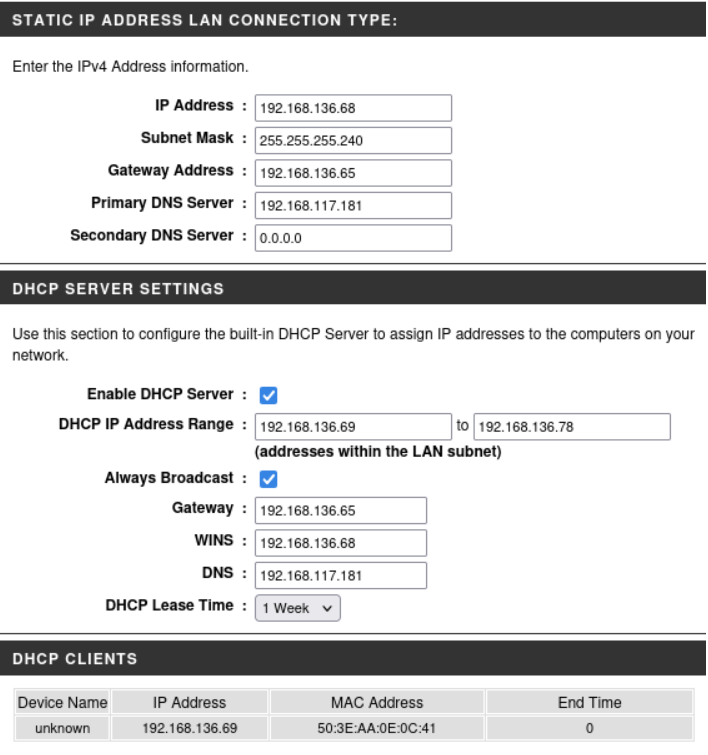
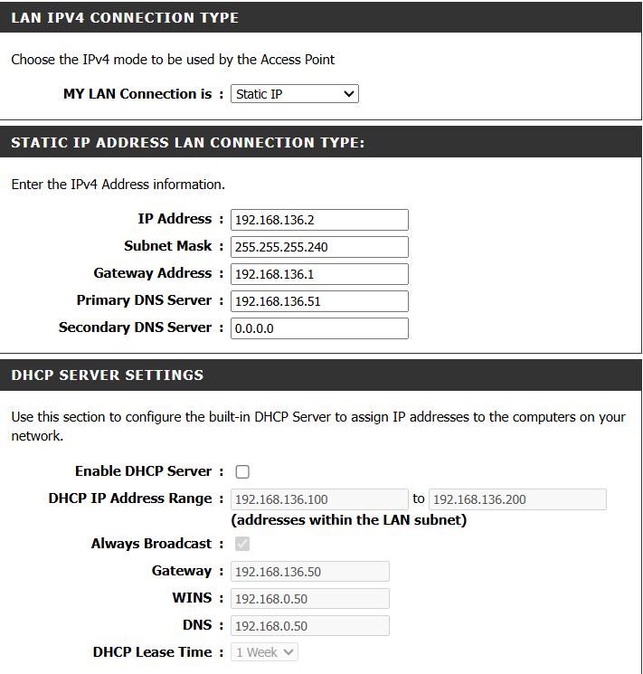

Le premier point d'accès Wifi D-Link DAP-2020 permet aux clients de la brasserie de se connecter au réseau sans fil via le SSID brasserie-client. L'AP est connecté au switch sur le port 20 assigné au VLAN 60 (Wifi).
| Paramètre | Valeur |
|---|---|
| Adresse IP de gestion | 192.168.136.68 |
| Masque de sous-réseau | 255.255.255.240 |
| Passerelle par défaut | 192.168.136.65 |
| DNS primaire | 192.168.117.181 |
| VLAN | 60 — Wifi |
| Paramètre | Valeur |
|---|---|
| Plage DHCP | 192.168.136.69 à 192.168.136.78 |
| Passerelle distribuée | 192.168.136.65 |
| DNS distribué | 192.168.117.181 |
| Durée du bail | 1 semaine |
| Paramètre | Valeur |
|---|---|
| SSID | brasserie-client |
| Mot de passe | brasserie2026 |
| Sécurité | WPA2-PSK |
Restrictions d'accès : Les utilisateurs connectés au réseau brasserie-client disposent uniquement d'un accès à Internet et du droit de pinger l'équipement DHCP situé dans la DMZ. Tout autre accès ou ping vers le reste des équipements du réseau est strictement refusé.

Problème — Le DAP-2020 ne supporte pas les SSID multiples avec VLAN
Cause : Le DAP-2020 est un AP basique qui ne gère qu'un seul SSID.
Solution : Utilisation de deux Points d'Accès (AP) pour créer deux réseaux WiFi distincts, l'un dédié aux clients et l'autre aux employés.
Le problème de SSID multiple a été définitivement résolu grâce à l'implantation d'un second point d'accès dédié au réseau employés.
Le second point d'accès Wifi D-Link DAP-2020 est réservé exclusivement aux employés de la brasserie via le SSID brasserie-employe. L'AP est connecté au switch sur un port assigné au VLAN 10 (Employés). Les employés connectés à ce réseau ne subissent aucune restriction d'accès sur le réseau interne.
| Paramètre | Valeur |
|---|---|
| Adresse IP de gestion | 192.168.136.2 |
| Masque de sous-réseau | 255.255.255.240 |
| Passerelle par défaut | 192.168.136.1 |
| DNS primaire | 192.168.136.51 |
| VLAN | 10 — Employés |
| Paramètre | Valeur |
|---|---|
| Serveur DHCP intégré | Désactivé |
| Plage distribuée | 192.168.136.10 à 192.168.136.14 (serveur DHCP Windows) |
| Passerelle distribuée | 192.168.136.1 |
| DNS distribué | 192.168.136.51 |
| Durée du bail | 1 semaine |
| Paramètre | Valeur |
|---|---|
| SSID | brasserie-employe |
| Mot de passe | brasserie2026 |
| Sécurité | WPA2-PSK |
Restrictions d'accès : Aucune — ce réseau est réservé aux employés et leur accorde un accès complet à l'ensemble du réseau interne.
